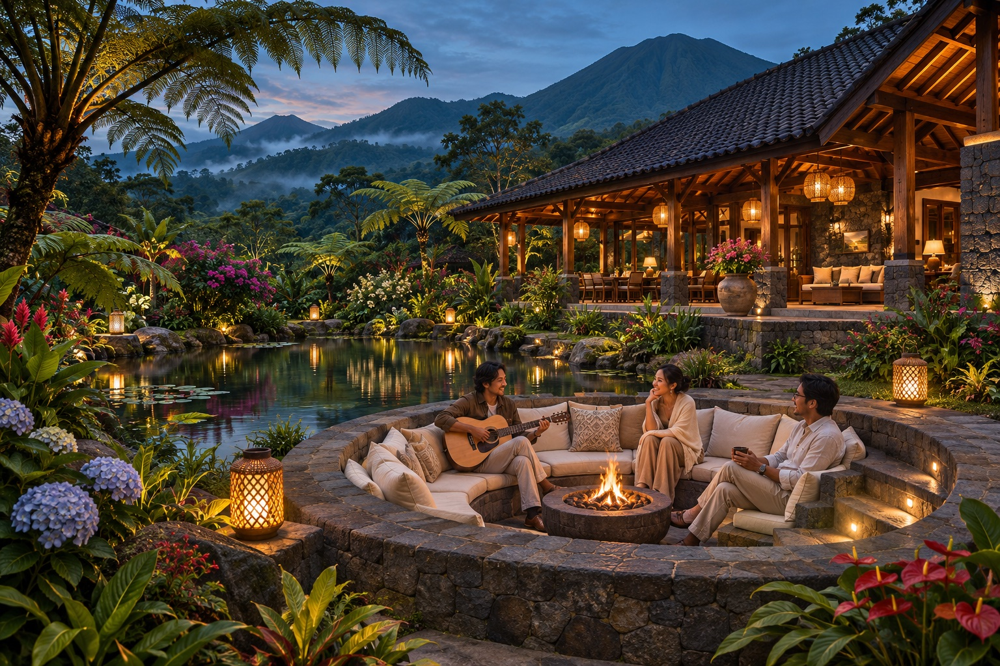

The mountain lifestyle
The days you
wish would last.
Coffee, gardens, water and good company. A different rhythm of life.
Discover moreA day, imagined
Nothing hurried.
Everything felt.
The luxury of Mount Paradise is in the everyday. A warm cup in the cool morning air. Space to wander through the garden. An evening that becomes a story you tell again.

07:00 / A slow beginning
Start with
the view.
Make coffee. Steep a pot of tea. Take your favorite seat on the terrace and watch the light move through the leaves.
Gardens for walking, quiet corners for reading and room to stretch bring a gentler rhythm to the morning.
13:00 / Life outdoors
A table.
A pool.
A whole afternoon.
Lunch becomes a gathering at your own BBQ terrace. A swim becomes an hour beside the water. Friends stay a little longer.
The landscape vision includes paths, tea gardens and places to pause, with the scale and planting to be developed through site studies.

18:30 / The glow of evening
One more song.
One more story.
Lanterns glow among the trees. A guitar finds its way into the circle. Firelight dances on stone as the mountain fades into the evening.
A pondside gathering place and carefully designed fire lounge are part of the proposed community experience: intimate, comfortable and surrounded by nature.